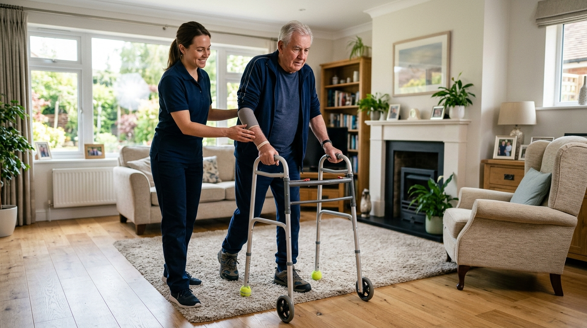

Restoring Movement, Balance & Independence at Your Doorstep
Hospital-grade rehabilitation delivered directly into the comfort of your living room. Our doctorate-level physical therapists specialize in post-stroke neuro-plasticity, joint arthroplasty recovery, and evidence-based fall risk elimination.

Evidence-Based Clinical Pathways
Each patient receives a tailored clinical protocol designed by our Doctorate of Physical Therapy (DPT) team in consultation with your orthopedic surgeon or neurologist.
Orthopedic & Arthroplasty
Targeted post-op recovery for total knee, hip, and shoulder replacements. Accelerated passive-to-active ROM and scar tissue mobilization.
- Joint angle goniometry
- Cryo-cuff edema reduction
- Progressive weight-bearing
Neuro-Plasticity & Stroke
Constraint-induced movement therapy, bilateral motor retraining, and neuromuscular stimulation for hemiparesis recovery following CVA.
- Repetitive task training
- Proprioceptive re-education
- Mirror neuron therapy
Geriatric Fall Prevention
Berg Balance Scale assessments, vestibular habituation, home environmental obstacle audit, and core dynamic stability training.
- Home hazard mapping
- Dynamic gait index tests
- Assistive cane/walker tuning
Cardiopulmonary Conditioning
Structured endurance reconditioning for post-CABG, congestive heart failure, and COPD patients to rebuild stamina safely.
- Continuous SpO2 & ECG tracking
- Energy conservation coaching
- Diaphragmatic breathing plans
Our 4-Phase Diagnostic & Recovery Cycle
We do not guess; we measure. Our rehabilitation framework tracks micro-milestones to guarantee objective improvement.
Baseline Functional Audit
Comprehensive 90-minute in-home evaluation covering joint range of motion (ROM), manual muscle testing (MMT), and home fall hazard scans.
Micro-Targeted Care Plan
Physician-aligned clinical care prescription detailing visit frequency, progressive resistance targets, and functional milestone metrics.
Active Bedside Treatment
One-on-one sessions utilizing portable ultrasound, NMES electrical stimulation, proprioceptive wobble boards, and assisted gait training.
Independence Discharge
Final objective scoring against baseline, physician sign-off, family maintenance training, and long-term home exercise prescription.
Hospital-Grade Equipment Brought to Your Bedside
You don't need to travel to an outpatient clinic in pain. Our clinicians arrive fully equipped with advanced rehabilitation modalities designed for rapid in-home deployment.
NMES & TENS Units
Neuromuscular stimulation to prevent muscular atrophy and alleviate chronic pain.
Targeted Cryo-Compression
Pneumatic active ice wraps to control post-surgical joint swelling and hematomas.
Therapeutic Ultrasound
Deep tissue thermal healing for tendonitis, muscle spasms, and joint stiffness.
Balance Perturbation Gear
Gait belts, rocker boards, and dynamic foam pads for vestibular equilibrium retraining.
Clinical Outcome Benchmarks
12-Week Orthopedic Knee Recovery Roadmap
A clear, structured timeline showing weekly functional targets from acute discharge to unassisted community walks.
Acute Bedside & Protection
Focus on wound protection, edema control, passive extension (0°), and gentle flexion (90°). Walker-assisted room navigation.
Dynamic Weight-Bearing
Transition from walker to single-point cane. Eccentric hamstring and glute activation. Reciprocal stair ascent training.
Community Independence
Unassisted walking on uneven terrain, endurance walks up to 1 mile, gardening/driving return, and permanent home maintenance regimen.
Estimate Your Recommended Rehab Protocol
Select primary condition and mobility status to preview clinical recommendations.
Have a Doctor's Physical Therapy Script?
We verify insurance benefits within 2 hours and can dispatch a licensed Physical Therapist to your home within 24 hours of hospital discharge.